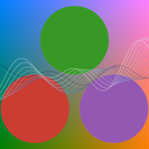
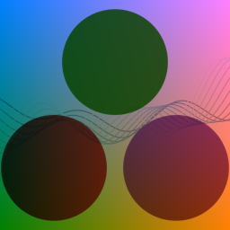
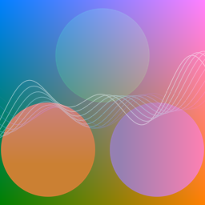
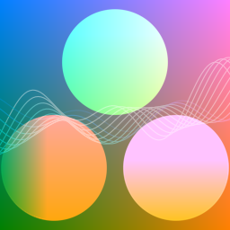
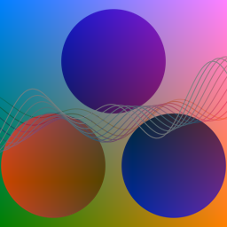

Blend Modes
If your browser supports the CSS property mix-blend-mode, you will see pairs of images below. The former images are the results of ColorBlendModes, and the latter images are the results with the CSS.
normal

ColorBlendModes.BlendNormal — ConstantBlendNormalThe destination color is always the source color.
Cdest = Csrcmultiply

ColorBlendModes.BlendMultiply — ConstantBlendMultiplyThe source color is multiplied by the backdrop color.
Cdest = Cb × Csrcscreen

ColorBlendModes.BlendScreen — ConstantBlendScreenThe complementary colors of the source and backdrop colors are multiplied, and the destination color is the complementary color of the multiplicated color.
Cdest = 1 - ((1 - Cb) × (1 - Csrc))overlay

ColorBlendModes.BlendOverlay — ConstantBlendOverlaydarken

ColorBlendModes.BlendDarken — ConstantBlendDarkenlighten

ColorBlendModes.BlendLighten — ConstantBlendLightencolor-dodge

ColorBlendModes.BlendColorDodge — ConstantBlendColorDodgecolor-burn

ColorBlendModes.BlendColorBurn — ConstantBlendColorBurnhard-light

ColorBlendModes.BlendHardLight — ConstantBlendHardLightsoft-light

ColorBlendModes.BlendSoftLight — ConstantBlendSoftLightdifference

ColorBlendModes.BlendDifference — ConstantBlendDifferenceexclusion

ColorBlendModes.BlendExclusion — ConstantBlendExclusion